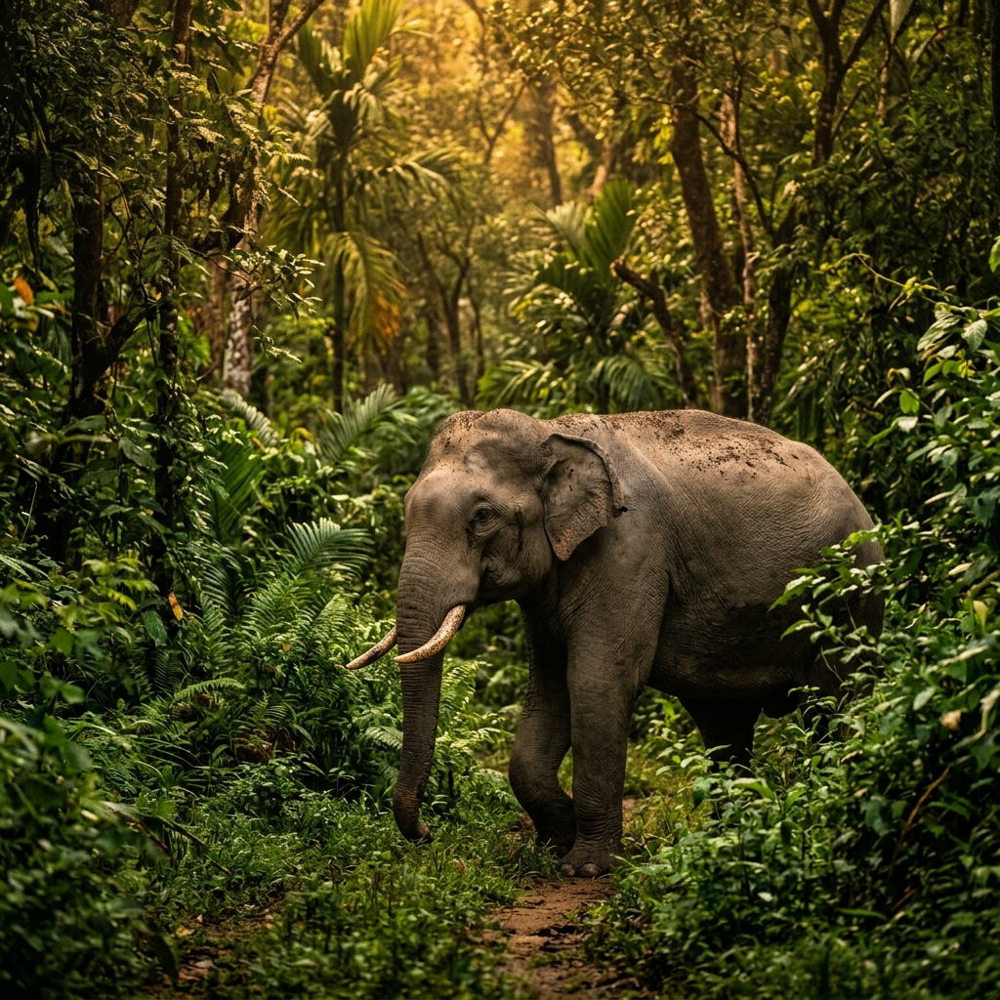

FEATURED
Wildlife
Elephant Population in Wayanad Reserve Rises to Record 600 — Forest Survey 2026
The latest wildlife census by the Kerala Forest Department confirms a 12% rise in the elephant population in Wayanad Wildlife Sanctuary. Officials credit improved anti-poaching measures and community forest protection initiatives launched after the 2024 floods.
Read Full Story